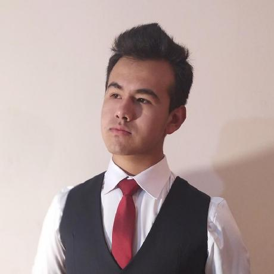
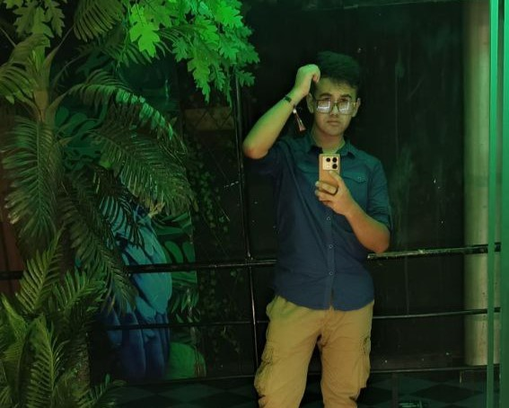

Mi Página Personal
¿Quién Soy?
Hola, soy Alexander, pero todos me dicen Alex, un estudiante universitario dedicado a la Ingeniería de Sistemas. Actualmente, estoy cursando el 3er año de mi carrera en la Universidad Mayor Real y Pontificia de San Francisco Xavier de Chuquisaca, donde me he interesado ampliamente en el área de redes, intentando destacar siempre en todas las áreas respectivas.
Más sobre mí
Nací el 8 de abril del 2003, exactamente un martes por la tarde (15:03 según mi madre). Vengo de una familia humilde pero que ha sabido salir adelante con mucho esfuerzo. Somos 5 personas en mi familia, mi madre, mi padre, mis dos hermanos, y un perrito.
Actualmente vivo en la Av. Marcelo Quiroga Santa Cruz, lugar donde está establecido uno de los negocios de mi padre, en donde suelo ayudar regularmente.
Logros personales y experiencia Académica
- Graduado de la secundaria en el cuadro de honor
- Egresado del Centro Boliviano Americano (CBA)
Contacto
Siempre estoy abierto a conocer nuevas personas, estudiantes y profesionales para poder compartir intereses y valores.
Los enlaces a mis redes sociales son:
Correo: alexpaulfernandez0804@gmail.com
© 2023 - Todos los derechos reservados